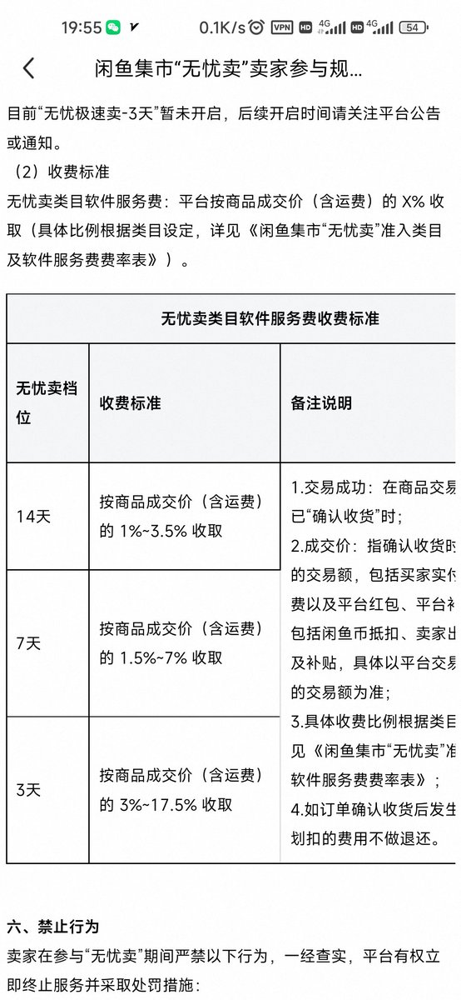

奶昔🥤
@realNyarime
从去年闲鱼开始抽水后，这两天又出一个收割机“无忧卖”，抽水不是一般的猛，且售价不是卖家想卖多少就卖多少，而是闲鱼根据市场行情调节，参加活动会直接修改设置的价格，卖家无法修改。不单卖家没有定价权，卖掉了还要被猛猛抽水
所以说真正苦逼的只有真实的个人卖家，正常人一年能卖多少二手还要被收手续费，都是这些狗商家在卖。不花钱又不参加活动的，我相信不花钱根本没流量，让花钱的一套接一套，再怎么擦亮都无济于事
现在似乎是闲鱼百分百垄断了，隔壁转转退出个人二手交易市场后天天在主播那边砸广告玩回收，之前听说小红书推个人二手交易，后面也没声了
